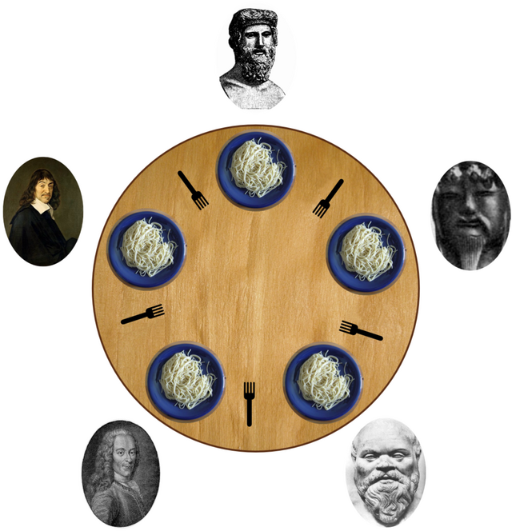

Présentation
Je me nomme Poirot Vincent et voici ma page de présentation, où je me résume en quatre points:
Quel développeur suis-je ?
Je commence ma formation en informatique fin 2022 à l'école 42 après avoir réussi la piscine avec quasiment aucune connaissance préalable dans ce domaine.
Mon parcours m'a permis de découvrir rapidement les aspects principaux de la programmation.
Au terme du tronc commun, mon domaine de prédilection est le dévellopment d'applications/programmes en C et C++.
Je suis aussi intéressé par la cybersécurité dans laquelle je commence à me former.
Mes expériences professionnelles
En dehors de l'école 42 je n'ai aucune expérience professionnelle dans le domaine de la programmation à partager pour le moment.
Ma scolarité
- \2018 $> Brevet des collèges et rentré au lycée Charles Pointet de Thann
Je travaillais mon Baccalauréat Professionnel en Maintenance des Equipements Industriels
Durant ses années de lycée j'ai fait plusieurs stages dans le domaine de la maintenance chez Altodis à Rixheim et chez Corteva à Cernay
- \2022 $> Obtentions du Baccalauréat et admissions à l'école 42
J'opte pour une réorientation dans le domaine de la programmation
- \2025 $> Fin du tronc commun à l'école 42
Mes hobbies
Depuis toujours, je suis passionné de jeux vidéo et je suis un grand amateur de jeux d'aventure.
D'autres activités, comme les jeux de société et les jeux de cartes, font partie de mes divertissements.
De plus, je pratique régulièrement du sport et des activités en dehors pour rester en bonne santé.

Mon cursus à 42
Le concept de cette école est de réaliser des projets en totale autonomie sans professeur.
Le travail en équipe et l'apprentissage par soi-même sont nécessaires pour avancer dans les projets.
Je vais exposer en détail deux projets marquants ci-dessous.
Philosophers
Connaissez-vous le problème du dîner des philosophes ?
Des philosophes sont réunis autour d'une table. Devant chacun, il y a une assiette et une fourchette à côté.
Un philosophe demande deux fourchettes pour le repas : celle à gauche et celle à droite.
Si un philosophe ne mange pas dans un délai imparti, il décède.
Un philosophe doit obligatoirement prendre la fourchette à sa gauche en premier
et ne peux pas prendre celle de droite sans la gauche.

Le but du programme est de reproduire cette situation dans un code en langage C.
En argument pour lancer le programme, celui-ci demande 4 valeurs :
~> Nombre de philosophes.
~> Temps avant de décéder.
~> Temps pour manger.
~> Temps pour dormir.
Le but du projet était d'utiliser les threads pour pouvoir lancer un processus par philosophe.
Quand un processus(un philosophe), arrive dans la fonction pour "manger",
il réserve la fourchette à sa gauche et à sa droite ce qui fait que le prochain processus ne peux prendre la fourchette à sa gauche.
Le philosophe qui ne peux pas prendre une fourchette attend (il pense).
Pour bloquer une fourchette, on met en place un mutex qui vas empêcher le prochain precessus de la prendre.
Les fourchettes sont des variables de type 'pthread_mutex_t', qui grâce à une fonction, peuvent être bloquées et empêchent les autres processus d'y accéder.
Bien sûr, pendant ce temps-là, le délai avant qu'il décède avance.
Pour vérifier si un philosophe doit décéder, il faut calculer le temps depuis son dernier repas
et le comparer avec le délai fourni en argument.
Pour conclure, ce projet m'a permis d'approfondir mes connaissances en termes de programmations.
Le multi-threading est une logique technique et très intéressante.
ft_irc
🙋♂️Un serveur IRC (Inter Relay Chat) est un service en ligne qui permet à des utilisateurs
de discuter en temps réel via des "salons" ou "canaux" de discussion.
L'objectif était de créer un erveur IRC en C++ en duo.
L'un des principes d'un serveur IRC, est de ne pas sauvegarder les conversations dans une base de données.
Il n'y a aucune persistance dans les messages des utilisateurs.
Pour commencer, on a déterminé un client de référence pour faire utiliser notre serveur, ainsi nous avons choisi irssi.
Les actions possible sur le serveur sont les mêmes qu'un serveur IRC classique.
Le fonctionnement du serveur en plusieurs points :
Arriver d'un client:
~> Demande du displayname et username de l'utilisateur et le mot de passe du serveur.
~> Vérification des informations et de la validité du mot de passe.
~> Connexion de l'utilisateur au serveur.
~> Les informations sont stockées dans un objet instancié à partir d'une classe.
Utilisation:
~> Créer / rejoindre des canaux de conversation.
~> En tant qu'admin du canal:limiter le nombre de membres, le rendre sur invitation ou changer le topic.
~> Possibilité de parler dans un canal privé entre chaque utilisateur.
Déconnexion / Crash:
~> Déconnexion de l'utilisateur, des canaux encore liés à lui.
~> Suppression de l'objet lié à l'utilisateur.
J'ai eu l'occasion de travailler en duo pendant ce projet. L'organisation était primordiale et nous avons réparti les tâches.
On s'est basé sur des serveurs déjà existants pour comprendre le fonctionnement. Le sujet ne nous demandait pas de le déployer en ligne,
en raison du manque de temps, nous n'avions pas pu le faire.